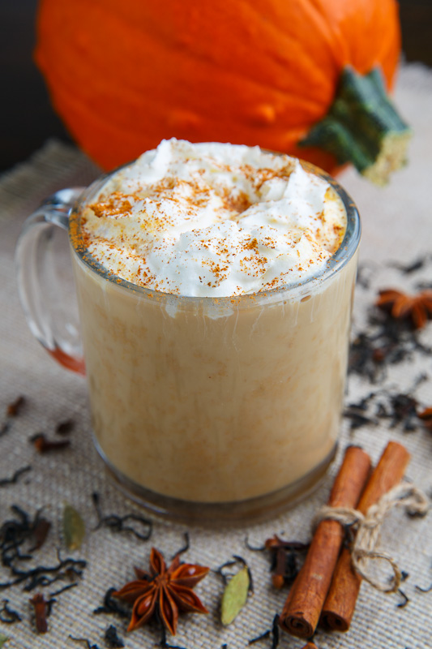

Pumpkin Spice Tea

Let's make some tea!
This black tea recipe is perfect for getting you in the fall mood. Follow the recipe below for a treat!
Ingredients
- tea kettle
- tea pot with steeper
- hot water
- black tea
- milk of choice
- cinnamon, nutmeg, cloves or mix of fall spices
- (optional)whipped cream
Directions
- Bring water to a boil using tea kettle
- Follow tea instructions for black tea. Normally steep for 5 minutes
- Pour tea into a tea cup and milk into the tea until you've reached desired opacity
- Either top with fall spices or top with whipped cream and sprinkle fall spices on top of whipped cream